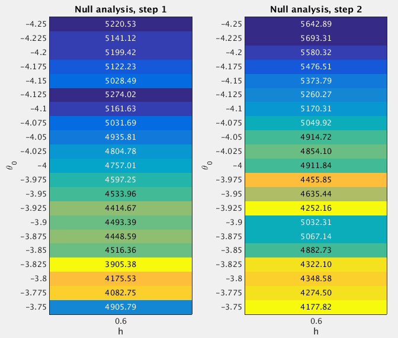

25.2 GSEA Round 2
Last updated: 2017-04-12
Code version: 165dd72eeaecde46dbd09f1ee0d64c1b665f38fb
25.2.1 Fit the null model
From the Round 1 null analysis (Section 25.1), I found that almost 100% posterior mass is concentrated on the setting (h=0.6, theta0=-4). In Round 2, I used a finer grid. Specifically, I used the grids theta0=(-4.25:0.025:-3.75)' and h=0.6 when fitting the null model. I estimated the (unnormalized) log importance weights (“pseudo-likelihoods”) for all 21 sets of (h,theta0) under null.

After normalizing the log “pseudo-likelihoods” (logw.step*) to posterior probabilities (posp.step*), we can see that almost 100% posterior mass is concentrated on the settings h=0.6 and theta0=(-4.225:0.025:-4.125)'.
theta0.index <- as.character(null.df$theta0) %in% as.character(seq(-4.225,-4.125,by=0.025))
sum(null.df$posp.step1[theta0.index]) ## [1] 1sum(null.df$posp.step2[theta0.index]) ## [1] 125.2.2 Fit the enrichment model
To perform GSEA, I set h=0.6 and theta0=(-4.225:0.025:-4.125)', since the null analysis suggests that almost 100% posterior mass is placed on these settings. For the log-fold enrichment parameter, I use the grid theta = (0:(3/150):3)'. The following table lists the GSEA results.